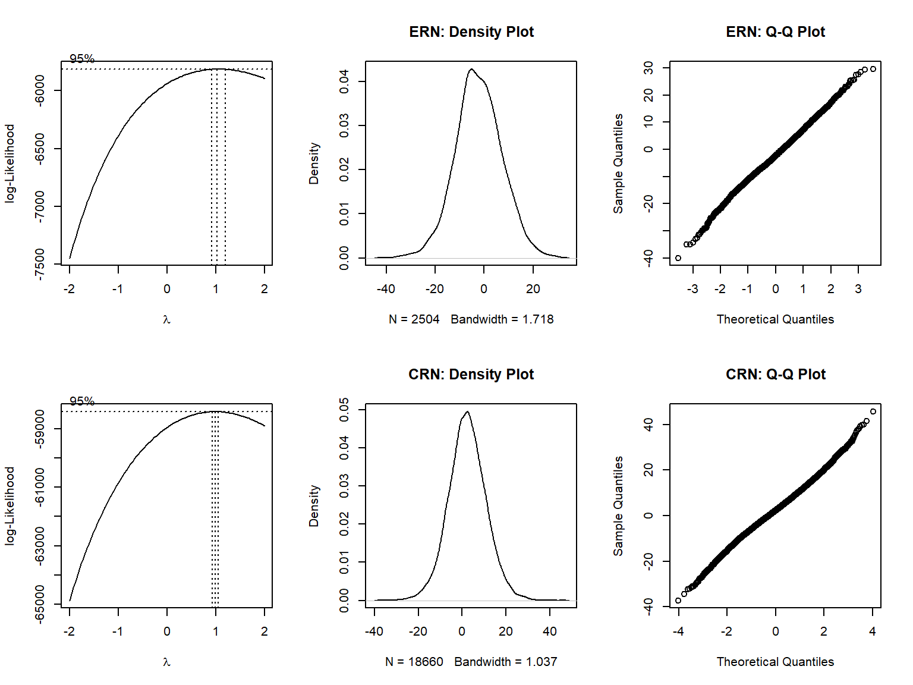

# Set general settings for markdown file
knitr::opts_chunk$set(
message = FALSE,
warning = FALSE,
comment = "",
results = "hold")
# Clear environment
rm(list = ls())
# Load packages
library(dplyr) # for data wrangling
library(knitr) # for integrating computing and reporting in markdown
library(kableExtra) # for customizing appearance of tables
library(MASS) # for boxcox function and contrast definition
library(lme4) # for (G)LMMs
library(lmerTest) # for LMM p values (Satterthwaite's method for approximating dfs for t and F tests)
library(sjPlot) # for tab_model function to display (G)LMM results
library(splithalf) # for permutation-based split-half reliability
# Load functions
source("./functions/summarySEwithinO.R") # Function provided by R-cookbook: http://www.cookbook-r.com/Graphs/Plotting_means_and_error_bars_(ggplot2)/
source("./functions/my_table_template.R") # Function to create table template
# Turn off scientific notation
options(scipen = 999)
# Prepare labels for LMM tables
labels <- c(
"(Intercept)" = "Intercept",
"group2-1" = "Group (OCD – HC)")# Load data
load(file = "./data/Single_Trial_Data.rda")
# For ERP analysis, exclude inhibited gng responses, missing gng responses, gng responses with
# wrong key, gng RT outliers, and trials with ERP artifacts
single_trial_data_erp <- single_trial_data %>%
dplyr::filter(
gng_response_type != "IR" &
gng_response_type != "miss" &
gng_response_type != "wrong_key" &
(is.na(gng_rt_invalid) | gng_rt_invalid == FALSE) &
stimulation == "sham" &
MFN_artifact == FALSE)
# Create accuracy variable ("incorrect" = FA; "correct" = SH, FH)
single_trial_data_erp <- single_trial_data_erp %>%
dplyr::mutate(gng_accuracy = ifelse(gng_response_type == "FA", "incorrect", "correct"))
# Calculate % of excluded trials per participant
excluded_trials_per_participant <- single_trial_data %>%
dplyr::filter(stimulation == "sham") %>%
dplyr::group_by(participant_id) %>%
dplyr::summarize(EEG_artifact = sum(is.nan(MFN_0_100_FCz)) / length(participant_id) * 100) %>%
dplyr::ungroup() %>%
dplyr::summarize(across(-c(participant_id), list(mean, sd)))
# Make categorical variables factors
single_trial_data_erp$participant_id <- factor(single_trial_data_erp$participant_id)
single_trial_data_erp$group <- factor(single_trial_data_erp$group)In the analysis of ERPs in the go/no-go task, trials were discarded if RT in the go/no-go task was below 100 ms or above 800 ms, no response was made, or the response was made with a key not assigned to the go/no-go task. We further discarded trials containing artifacts in the EEG, i.e., a voltage difference exceeding 200 μV within an epoch or 50 μV between sample points, resulting in rejection of 0.58% (SD = 1.21) of epochs on average.
This table corresponds to Table S2 in the supplemental material.
# Calculate descriptive statistics for ERN/CRN
descriptive_statistics <- summarySEwithinO(
data = single_trial_data_erp,
measurevar = "MFN_0_100_FCz",
withinvars = "gng_accuracy",
betweenvars = "group",
idvar = "participant_id",
conf.interval = .95) %>%
# Rename variable and create measure variable
dplyr::rename(mean = MFN_0_100_FCz) %>%
dplyr::mutate(measure = rep(c("CRN (µV)", "ERN (µV)"), 2))
# Create column with format "M [CI]" (round to 2 decimals)
descriptive_statistics$M_CI <- paste0(
format(round(descriptive_statistics$mean, 2), nsmall = 2), " [",
format(round(descriptive_statistics$mean -
descriptive_statistics$ci, 2), nsmall = 2), ", ",
format(round(descriptive_statistics$mean +
descriptive_statistics$ci, 2), nsmall = 2), "]")
# Split and re-merge table to display both groups next to each other
descriptive_statistics <- split(descriptive_statistics, descriptive_statistics$group)
descriptive_statistics_display <- cbind(descriptive_statistics$OCD[, c("measure", "M_CI")],
descriptive_statistics$HC[, "M_CI"])
# Display table (and rearrange rows)
my_table_template(descriptive_statistics_display[c(2, 1), ],
caption = "Descriptive Statistics for ERP Measures",
col_names = c("Measure", rep("M [95% CI]", 2)),
header_above_config = c("", "Patients with OCD", "Healthy control participants")) %>%
add_footnote("\n Note. CIs are adjusted for within-participant designs using the method
described by Morey (2008). ERN and CRN were measured as mean amplitude
from 0 to 100 ms at electrode FCz after false alarms and hits, respectively.", notation = "none") | Measure | M [95% CI] | M [95% CI] |
|---|---|---|
| ERN (µV) | -2.21 [-2.89, -1.53] | -2.15 [-2.90, -1.41] |
| CRN (µV) | 2.38 [ 2.15, 2.61] | 2.33 [ 2.10, 2.55] |
|
Note. CIs are adjusted for within-participant designs using the method described by Morey (2008). ERN and CRN were measured as mean amplitude from 0 to 100 ms at electrode FCz after false alarms and hits, respectively. |
# Calculate permutation-based split-half internal consistency for ERN/CRN
invisible(capture.output(split_half_reliability <- splithalf(
data = single_trial_data_erp,
outcome = "RT",
score = "average",
permutations = 5000,
halftype = "random",
var.RT = "MFN_0_100_FCz",
var.participant = "participant_id",
var.condition = "gng_accuracy",
conditionlist = c("correct", "incorrect"),
average = "mean")))
# Make nice table for display
split_half_reliability <- cbind(ERP = c("CRN", "ERN"), split_half_reliability$final_estimates) %>%
dplyr::select(ERP, spearmanbrown, SB_low, SB_high) %>%
dplyr::rename(r = spearmanbrown, CI_low = SB_low, CI_up = SB_high)
# Display permutation-based split-half internal consistency
my_table_template(split_half_reliability[c(2, 1), ],
caption = "Permutation-based split-half reliability")| ERP | r | CI_low | CI_up |
|---|---|---|---|
| ERN | 0.89 | 0.82 | 0.93 |
| CRN | 0.98 | 0.98 | 0.99 |
Internal consistency was good for ERN (r = 0.89, 95% CI [0.82, 0.93]) and excellent for CRN (r = 0.98, 95% CI [0.98, 0.99]), as assessed with a permutation-based split-half method using 5,000 random splits and Spearman–Brown correction.
We performed linear mixed models (LMMs) on single-trial data. Analysis of ERP amplitudes in the go/no-go task included group as fixed effect. Models on ERN and CRN were based on false alarm and hit trials, respectively.
We used sliding difference contrasts for categorical fixed effects and started with the maximal random-effects structure for each model. In case of non-convergence, random effects were specified as uncorrelated. Using principal component analysis, we identified random effects explaining zero variance and removed these, as recommended by Bates, Kliegl, et al. (2015).
No data transformation was required to meet the assumption of normally distributed residuals. This was determined using the Box–Cox procedure (Box & Cox, 1964).
# Arrange plots
par(mfrow = c(2, 3))
# Determine transformation of ERN by estimating optimal lambda using Box–Cox procedure
bc_ern <- boxcox(MFN_0_100_FCz + 50 ~ 1,
data = single_trial_data_erp[single_trial_data_erp$gng_accuracy == "incorrect", ])
optlambda_ern <- bc_ern$x[which.max(bc_ern$y)]
# Density plot for ERN values
plot(density(single_trial_data_erp[single_trial_data_erp$gng_accuracy == "incorrect", ]$MFN_0_100_FCz),
main = "ERN: Density Plot")
# Q-q plot for ERN values
qqnorm(single_trial_data_erp[single_trial_data_erp$gng_accuracy == "incorrect", ]$MFN_0_100_FCz,
main = "ERN: Q-Q Plot", pch = 1)
# Determine transformation of CRN by estimating optimal lambda using Box–Cox procedure
bc_crn <- boxcox(MFN_0_100_FCz + 50 ~ 1,
data = single_trial_data_erp[single_trial_data_erp$gng_accuracy == "correct", ])
optlambda_crn <- bc_crn$x[which.max(bc_crn$y)]
# Density plot for CRN values
plot(density(single_trial_data_erp[single_trial_data_erp$gng_accuracy == "correct", ]$MFN_0_100_FCz),
main = "CRN: Density Plot")
# Q-q plot for CRN values
qqnorm(single_trial_data_erp[single_trial_data_erp$gng_accuracy == "correct", ]$MFN_0_100_FCz,
main = "CRN: Q-Q Plot", pch = 1)
# Reset plot layout
par(mfrow = c(1, 1))For the ERN, the optimal lambda is 1.03 (upper left plot), suggesting that no transformation is needed. For the CRN, the optimal lambda is 0.99 (lower left plot), suggesting that no transformation is needed.
This table corresponds to Table 5 in the manuscript.
# Define contrasts (sliding difference contrasts = effect coding for factors with 2 levels)
contrasts(single_trial_data_erp$group) <- contr.sdif(2)
# Run model on ERN with maximal random-effects structure
LMM_ern <- lmer(MFN_0_100_FCz ~ group + (1 | participant_id),
data = single_trial_data_erp[single_trial_data_erp$gng_accuracy == "incorrect", ],
REML = TRUE,
control = lmerControl(optimizer = "bobyqa"))
# Check model output and PCA of random-effects variance-covariance estimates
# summary(LMM_ern) # Model does converge
# isSingular(LMM_ern) # No singular fit
# summary(rePCA(LMM_ern)) # All terms explain variance
# Run model on CRN with maximal random-effects structure
LMM_crn <- lmer(MFN_0_100_FCz ~ group + (1 | participant_id),
data = single_trial_data_erp[single_trial_data_erp$gng_accuracy == "correct", ],
REML = TRUE,
control = lmerControl(optimizer = "bobyqa"))
# Check model output and PCA of random-effects variance-covariance estimates
# summary(LMM_crn) # Model does converge
# isSingular(LMM_crn) # No singular fit
# summary(rePCA(LMM_crn)) # All terms explain variance
# Display results (fixed effects)
tab_model(LMM_ern, LMM_crn,
dv.labels = c("ERN", "CRN"), pred.labels = labels, show.stat = TRUE, show.icc = FALSE,
show.r2 = FALSE, show.re.var = FALSE, show.ngroups = FALSE, minus.sign = "-",
string.pred = "Fixed effects", string.est = "b", string.stat = "t", string.ci = "95 % CI",
p.val = "satterthwaite", title = "LMM Results for ERN and CRN in the Go/No-Go Task")
# Display random effects
print("Random effects ERN:")
print(VarCorr(LMM_ern), digits = 3, comp = "Std.Dev.")
# Display random effects
print("Random effects CRN:")
print(VarCorr(LMM_crn), digits = 3, comp = "Std.Dev.")| ERN | CRN | |||||||
|---|---|---|---|---|---|---|---|---|
| Fixed effects | b | 95 % CI | t | p | b | 95 % CI | t | p |
| Intercept | -2.65 | -3.93 – -1.37 | -4.15 | <0.001 | 2.33 | 1.41 – 3.25 | 5.07 | <0.001 |
| Group (OCD – HC) | 0.52 | -2.04 – 3.09 | 0.41 | 0.684 | 0.05 | -1.79 – 1.89 | 0.05 | 0.956 |
| Observations | 2504 | 18660 | ||||||
[1] "Random effects ERN:"
Groups Name Std.Dev.
participant_id (Intercept) 4.55
Residual 8.50
[1] "Random effects CRN:"
Groups Name Std.Dev.
participant_id (Intercept) 3.41
Residual 7.98
ERN and CRN amplitudes did not differ significantly between groups.
Bates, D., Kliegl, R., Vasishth, S., & Baayen, H. (2015). Parsimonious mixed models. arXiv. https://arxiv.org/abs/1506.04967v2
Box, G. E., & Cox, D. R. (1964). An analysis of transformations. Journal of the Royal Statistical Society: Series B (Methodological), 26(2), 211–243. https://doi.org/10.1111/j.2517-6161.1964.tb00553.x
Morey, R. (2008). Confidence intervals from normalized data: A correction to Cousineau (2005). Tutorials in Quantitative Methods for Psychology, 4(2), 61–64. https://doi.org/10.20982/tqmp.04.2.p061
sessionInfo()R version 3.6.1 (2019-07-05)
Platform: x86_64-w64-mingw32/x64 (64-bit)
Running under: Windows 10 x64 (build 19044)
Matrix products: default
locale:
[1] LC_COLLATE=German_Germany.1252 LC_CTYPE=German_Germany.1252
[3] LC_MONETARY=German_Germany.1252 LC_NUMERIC=C
[5] LC_TIME=German_Germany.1252
attached base packages:
[1] stats graphics grDevices datasets utils methods base
other attached packages:
[1] plyr_1.8.7 splithalf_0.8.2 sjPlot_2.8.11 lmerTest_3.1-3
[5] lme4_1.1-25 Matrix_1.5-1 MASS_7.3-51.4 kableExtra_1.3.4
[9] knitr_1.40 dplyr_1.0.10
loaded via a namespace (and not attached):
[1] httr_1.4.4 sass_0.4.0 tidyr_1.2.1
[4] jsonlite_1.8.3 viridisLite_0.4.1 splines_3.6.1
[7] modelr_0.1.9 bslib_0.4.0 datawizard_0.6.2
[10] assertthat_0.2.1 statmod_1.4.37 highr_0.9
[13] renv_0.12.0 robustbase_0.95-0 yaml_2.2.1
[16] bayestestR_0.13.0 numDeriv_2016.8-1.1 pillar_1.8.1
[19] backports_1.4.1 lattice_0.20-45 glue_1.6.2
[22] digest_0.6.30 rvest_1.0.3 minqa_1.2.4
[25] colorspace_2.0-3 psych_2.2.9 htmltools_0.5.3
[28] pkgconfig_2.0.3 broom_1.0.1 purrr_0.3.5
[31] xtable_1.8-4 mvtnorm_1.1-3 patchwork_1.1.2
[34] scales_1.2.1 webshot_0.5.4 svglite_2.1.0
[37] emmeans_1.6.0 tibble_3.1.8 generics_0.1.3
[40] ggplot2_3.3.6 ellipsis_0.3.2 sjlabelled_1.2.0
[43] withr_2.5.0 cachem_1.0.4 mnormt_2.1.1
[46] cli_3.4.1 magrittr_2.0.3 effectsize_0.7.0.5
[49] estimability_1.4.1 evaluate_0.16 fansi_1.0.3
[52] nlme_3.1-140 xml2_1.3.3 tools_3.6.1
[55] lifecycle_1.0.3 stringr_1.4.1 munsell_0.5.0
[58] ggeffects_1.1.3 compiler_3.6.1 jquerylib_0.1.4
[61] systemfonts_1.0.4 rlang_1.0.6 grid_3.6.1
[64] nloptr_1.2.2.2 parameters_0.19.0 rstudioapi_0.14
[67] rmarkdown_2.16 boot_1.3-22 gtable_0.3.1
[70] sjstats_0.18.1 DBI_1.1.3 sjmisc_2.8.9
[73] R6_2.5.1 performance_0.10.0 fastmap_1.1.0
[76] utf8_1.2.2 insight_0.18.4 stringi_1.6.1
[79] parallel_3.6.1 Rcpp_1.0.9 vctrs_0.5.0
[82] DEoptimR_1.0-11 tidyselect_1.2.0 xfun_0.33